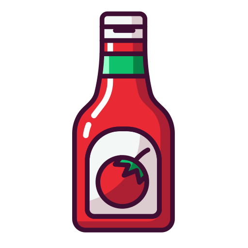
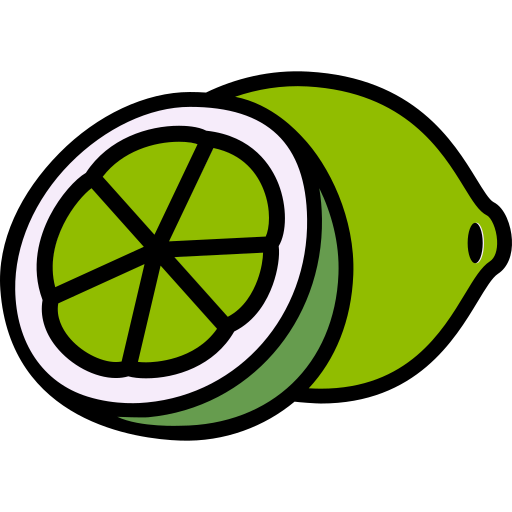

Receitas Salgadas
Strogonoff de Frango
Ingredientes
 500g de peito de frango cortado em cubos
500g de peito de frango cortado em cubos
 1 cebola média picada
1 cebola média picada
 2 dentes de alho picados
2 dentes de alho picados
 2 colheres de sopa de manteiga
2 colheres de sopa de manteiga
 1 lata de creme de leite (300g)
1 lata de creme de leite (300g)

2 colheres de sopa de ketchup 1 colher de sopa de mostarda
1 colher de sopa de mostarda
 200g de champignon fatiado
200g de champignon fatiado
 Sal e pimenta-do-reino a gosto
Sal e pimenta-do-reino a gosto
 Salsinha picada para finalizar
Salsinha picada para finalizar
Modo de Preparo
- Tempere o frango com sal e pimenta.
- Em uma panela, derreta a manteiga e refogue a cebola e o alho até dourar.
- Adicione o frango e cozinhe até dourar bem.
- Acrescente o champignon e misture.
- Junte o ketchup e a mostarda, mexa bem.
- Abaixe o fogo e adicione o creme de leite, mexendo sem parar.
- Cozinhe por mais 5 minutos em fogo baixo.
- Finalize com salsinha picada e sirva com arroz e batata palha.
Tempo de preparo: 30 minutos | Porções: 4
Frango Assado
Ingredientes
1 frango inteiro (aprox. 1,5kg)
4 dentes de alho amassados

Suco de 1 limão
3 colheres de sopa de azeite
 1 colher de chá de páprica defumada
1 colher de chá de páprica defumada
1 colher de chá de orégano
Sal e pimenta-do-reino a gosto
Ramos de alecrim a gosto
1 cebola cortada em rodelas
Modo de Preparo
- Misture o alho, limão, azeite, páprica, orégano, sal e pimenta formando uma pasta.
- Esfregue bem a pasta por todo o frango, inclusive por baixo da pele.
- Deixe marinar por pelo menos 1 hora na geladeira (ou de um dia para o outro).
- Preaqueça o forno a 200°C.
- Coloque as rodelas de cebola no fundo de uma assadeira e disponha o frango por cima.
- Adicione os ramos de alecrim ao redor.
- Cubra com papel alumínio e asse por 40 minutos.
- Retire o papel alumínio e asse por mais 30 minutos até dourar bem.
- Sirva com arroz, farofa ou legumes assados.
Tempo de preparo: 1h30 | Porções: 4 a 6